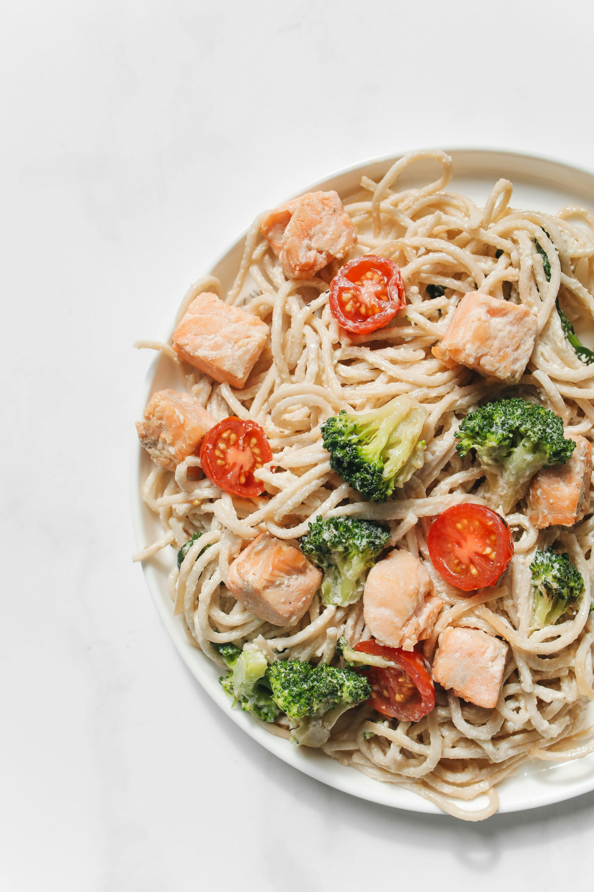

Ingredientes
- 2 xícaras (chá) de brócolis
- 3 colheres (sopa) de azeite
- 2 dentes de alho picados
- 1/2 pacote de Macarrão Todeschini Com Ovos Fettuccini Ninhos
- 1 colher (chá) de sal
- 2,5 litros de água
- 1/2 xícara (chá) de queijo parmesão ralado
- 1/2 xícara (chá) de creme de leite fresco
Modo de preparo
- Em uma frigideira, aqueça o azeite e doure o alho, acrescente o brócolis e misture bem. Junte o queijo e o creme de leite. Deixe ferver.
- Coloque em uma panela a água e o sal. Deixe ferver. Coloque o macarrão e cozinhe até ficar al dente. Escorra.
- Misture o macarrão ao brócolis.